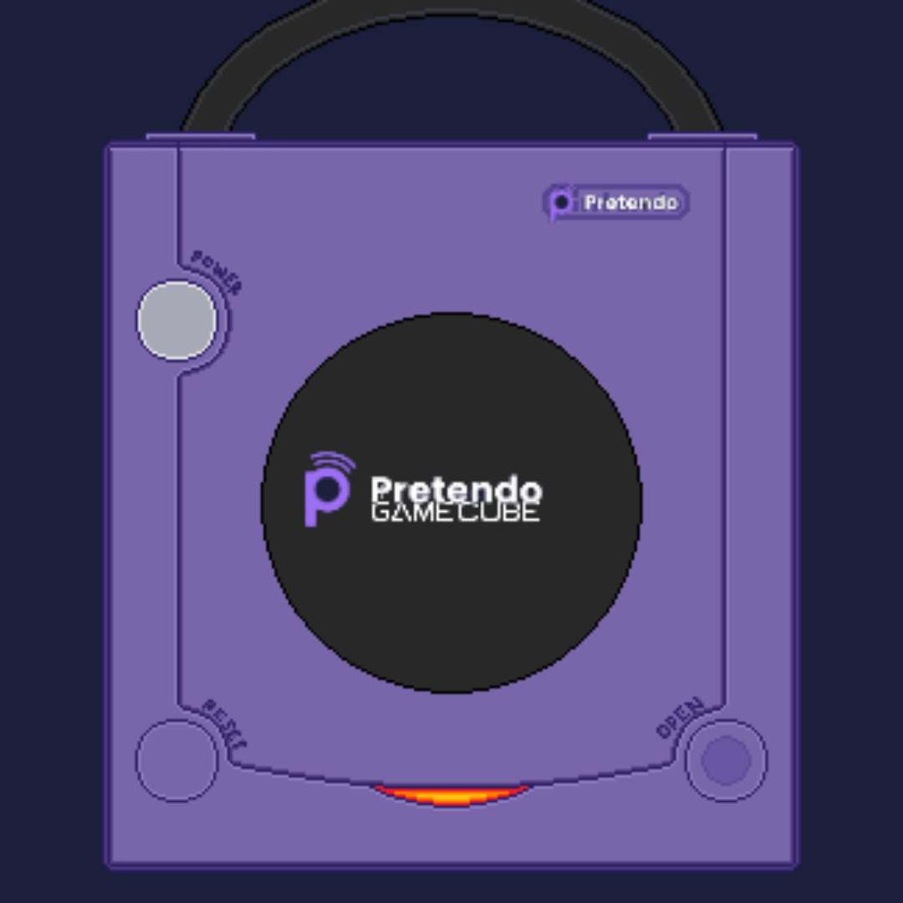

////////////`Pretendo Gamecube
Ever thought about those jokes of
people saying "Pretendo Gamecube when?" well that won’t be
a joke anymore, Introducing, Pretendo GC, A port of
Pretendo over to the Gamecube! The Servers can support
up to 7 people, depending on which game of course! This is still a WIP and not known when to release! There will be a video on how this will work, below the reason I did this!
⚠️THERE ARE NO GAMES CURRENTLY SUPPORTED! THE SOFTWARE IS NOT READY FOR PUBLIC USE⚠️
Gamecube online servers!
